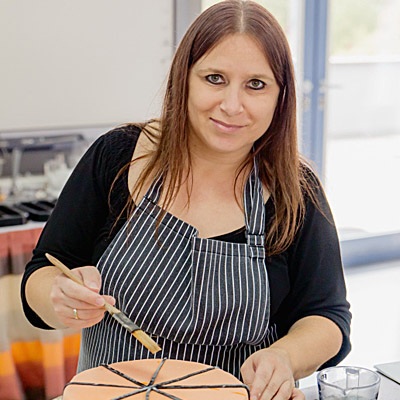
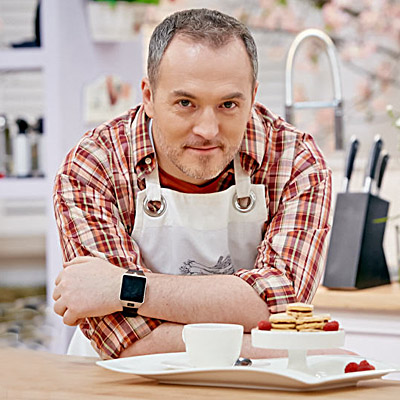

O AUTORACH

Magdawytawna kobieta

Staszeksłodki facet
Magdalena i Stanisław Romek, czyli wytrawna kobieta i słodki facet, poznali się na studiach ekonomicznych w Krakowie. Zbliżyła ich ognista kubańska salsa oraz miłość do tańca. Po kilku latach szczęśliwego związku i zawodowego spełnienia przyszedł czas na zmianę. Oboje postanowili realizować się kreatywnie, a ponieważ kochają wspólne gotowanie, ukończyli profesjonalny kurs i są dziś dyplomowanymi kucharzami i cukiernikami.
Od 5 lat z pasją prowadzą popularny blog kulinarny Kuchenne Wariacje. Wspólnie inspirują i zarażają swoich czytelników pasją gotowania. Popisy cukiernicze Stanisława obserwowała cała Polska w programie telewizyjnym “Bake Off – Ale ciacho!”. Od dwóch lat są na diecie bezglutenowej.